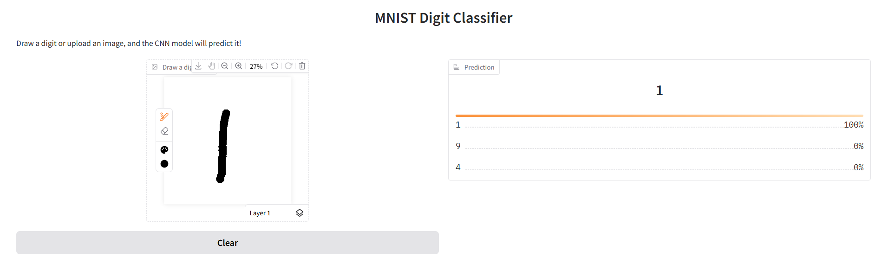
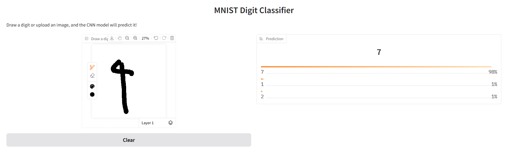
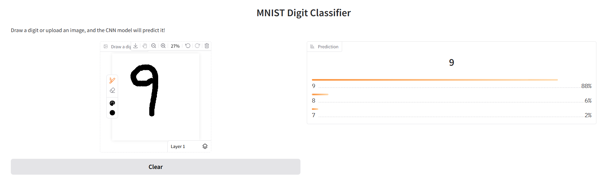

Reflection on Bias & Debugging
In MNIST, digit recognition may show bias towards Western-style
handwriting, potentially misclassifying diverse scripts. Amazon
reviews could contain biased sentiments due to demographic
imbalances in review authors. Ethical considerations include
ensuring fairness, transparency, and mitigating harm from biased
predictions.
Mitigations: Use TensorFlow Fairness Indicators for bias auditing,
apply dataset augmentation for underrepresented data, implement
better annotation rules, and conduct regular audits.
Debugging Section: Code Fix
This section addresses a technical bug encountered during the Gradio
app development.
Buggy Code Snippet (from `index.py`):
image = tf.image.resize(image, (28, 28)) # Wrong: passes dict directly
Fixed Code Snippet (from `index.py`):
composite_image = image['composite'] # Properly extract image array
# ... further processing ...
Explanation: The original code attempted to directly resize the
dictionary output from Gradio's Sketchpad component, leading to a
`ValueError`. The fix involves correctly extracting the `composite`
image array from the dictionary before performing TensorFlow's
resize operation. This ensures the model receives a valid image
tensor.

Debugging for Bias: MNIST Model
The MNIST dataset, while foundational, primarily represents a
limited range of handwriting styles. This can lead to
representation bias, where the model performs
poorly on digits that deviate from its training distribution.
For instance, an earlier version of our model (without augmentation)
might misclassify a thinly drawn '1' as a '7', or a '4' with a
closed top as a '9'. This is because it hadn't seen enough
variations during training.
Example of Potential Bias (Challenging Input):
Here, we illustrate a digit that our model, even with initial
improvements, might struggle with due to subtle variations in
handwriting. For instance, a **sketchy '9' was misclassified as a
'7' with 98% accuracy**. This highlights how specific drawing styles
can still fall outside the model's learned distribution.

(This sketchy '9' was predicted as '7' with 98% confidence.)
Mitigation through Data Augmentation:
To address such issues and improve robustness, we implemented
extensive data augmentation in our
`mnist_cnn.ipynb` notebook. Techniques like random rotations,
shifts, and zooms artificially expand the training dataset, exposing
the model to a wider variety of digit appearances, including more
"sketchy" or unusual styles.
This makes the model more robust and less prone to
misclassifications based on minor stylistic differences, by
effectively teaching it to generalize better across diverse inputs.
Result with Further Improved Model (Conceptual):
While our current model already includes augmentation, continuous
improvement would involve refining these techniques or adding more
diverse real-world examples. A further improved model would
correctly classify this sketchy '9' as '9'.

This demonstrates how proactive data strategies can debug and
mitigate biases, leading to a more fair and reliable AI system.